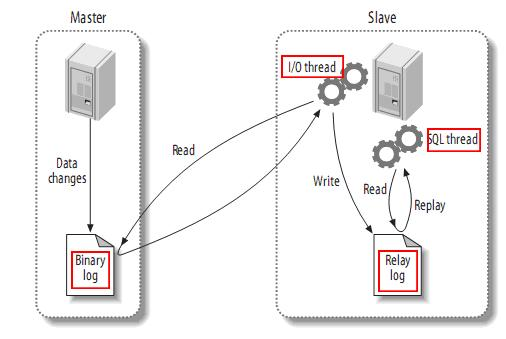
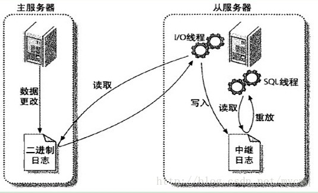
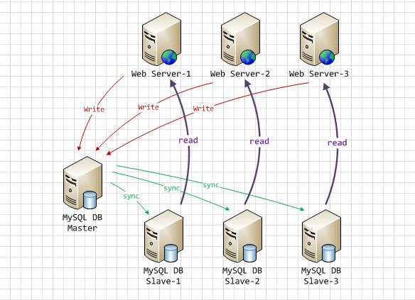

有人说聪明有两种，一种是短时间内学得特别快；一种是学得不快，但是时间长了能研究得很深。
高可用方案
一、常用方案
MySQL原生复制+复制优化
MySQL原生复制+第三方监控/转移工具
基于共享存储
MySQL Cluster
基于第三方
二、参考
主从复制详解
一、基础
MySQL内建的复制功能是构建大型高性能应用程序的基础，将MySQL数据分布到多个系统上，这种分布机制是通过将MySQL某一台主机(master)数据复制到其它主机(slaves)上，并重新执行一遍来实现的。复制过程中一个服务器充当主服务器(master)，而一个或多个其它服务器充当从服务器(slave)。主服务器将更新写入二进制日志文件，并维护文件的一个索引以跟踪日志循环，这些日志可以记录发送到从服务器的更新。当一个从服务器连接主服务器时，它通知主服务器从服务器在日志中读取的最后一次成功更新的位置。从服务器接收从那时起发生的任何更新，然后封锁并等待主服务器通知新的更新。master负责写操作，而读的操作则分摊到slave上进行，这样一来的可以大大提高读取的效率


实现原理
- 主库对所有DDL和DML产生的日志写进binlog
- show binlog events
- 主库生成一个log dump线程，用来给从库I/O线程读取binlog
- 从库的I/O Thread去请求主库的binlog，并将得到的binlog日志写到relay log文件中
- 从库的SQL Thread会读取relay log文件中的日志解析成具体操作，将主库的DDL和DML操作事件重放
- 从库会启动两个线程，一个I/O线程，一个SQL线程
- 主库对所有DDL和DML产生的日志写进binlog
好处
- 通过增加从服务器来提高数据库的性能，在主服务器上执行写入和更新，在从服务器上向外提供读功能，可以动态地调整从服务器的数量，从而调整整个数据库的性能。
- 提高数据安全-因为数据已复制到从服务器，从服务器可以终止复制进程，所以可以在从服务器上备份而不破坏主服务器相应数据
- 在主服务器上生成实时数据，而在从服务器上分析这些数据，从而提高主服务器的性能

- 同步模式
- 全同步复制：当主库执行完一个事务，并且所有的从库都执行了该事务，主库才提交事务并返回结果给客户端，性能较差。
- 半同步复制(semi-sync)：主库只需要等待至少一个从库接收到并写到Relay Log(数据落盘)文件即返回给主库ACK。主库收到这个ACK以后即代表复制完成。
- MySQL5.5以插件形式支持。
- after_commit
- after_sync
- 异步复制：MySQL默认复制模式，所以主库和从库的数据会有一定的延迟，更重要的是异步复制可能会引起数据的丢失。
二、实战
master配置
1
2
3
4
5server-id=1
log-bin=log
binlog-do-db=database_name //要同步的数据库
...
binlog-ignore-db=mysql //要忽略的数据库slave配置
1
2
3
4
5
6
7
8
9server-id=2
master-host=master服务器ip
master-user=mstest
master-password=123456
master-port=3306
master-connect-retry=60
replicate-do-db=dababase_name
...
replicate-ignore-db=mysql验证
show slave status\G;，如果slave_io_running和slave_sql_running都为yes，那么表明可以成功同步了TODO
三、扩展
mysql日志
- 错误日志：-log-err(记录启动，运行，停止mysql时出现的信息)
- 二进制日志：-log-bin(记录所有更改数据的语句，还用于复制，恢复数据库用)
- 查询日志：-log(记录建立的客户端连接和执行的语句)
- 慢查询日志: -log-slow-queries(记录所有执行超过long_query_time秒的所有查询)
DDL、DML、DCL
- DML(data manipulation language)数据操纵语言：就是我们最经常用到的SELECT、UPDATE、INSERT、DELETE，主要用来对数据库的数据进行一些操作。
- DDL(data definition language)数据库定义语言：就是我们在创建表的时候用到的一些sql，比如说：CREATE、ALTER、DROP等，主要是用在定义或改变表的结构，数据类型，表之间的链接和约束等初始化工作上。
- DCL(Data Control Language)数据库控制语言：是用来设置或更改数据库用户或角色权限的语句，包括grant,deny,revoke等语句。
四、参考
主从延迟
一、基础
MySQL的主从复制都是单线程的操作，主库对所有DDL和DML产生的日志写进binlog，由于binlog是顺序写，所以效率很高。Slave的SQL Thread线程将主库的DDL和DML操作事件在slave中重放，DML和DDL操作是随机的，不是顺序的，成本高很多。另外由于SQL Thread也是单线程的，当主库的并发较高时，产生的DML数量超过slave的SQL Thread所能处理的速度，或者当slave中有大型query语句产生了锁等待那么延时就产生了。
常见原因
- Master负载过高：主库的负载过高会导致主库无法及时将数据传输给从库
- Slave负载过高：从库的负载过高会导致从库无法及时处理主库传来的数据。
- 网络原因：网络延迟、丢包、带宽不足等因素都会影响主从同步速度。
- 机器性能太低
- MySQL配置不合理
- 执行大事务
- 数据库版本不一致：如果主从数据库版本不一致，可能会出现一些不兼容的情况，也会导致延迟。
排查方案
show slave status- Seconds_Behind_Master参数的值
- NULL：表示io_thread或是sql_thread有任何一个发生故障
- 0：该值为零，表示主从复制良好
- 正值：表示主从已经出现延时，数字越大表示从库延迟越严重
- Master_Log_File
- Read_Master_Log_Pos
- Exec_Master_Log_Pos
- Relay_Master_Log_File
- Seconds_Behind_Master参数的值
show master status
- File指标
- Position指标
解决方案
- 配合semi-sync半同步复制
- 优化网络
- 一主多从，减少从库压力
- 升级Slave硬件配置
- top查看系统负载
- iostat -xm 1 查看磁盘IO负载
- 强制走主库方案(强一致性)
- Slave调整参数，关闭binlog，修改innodb_flush_log_at_trx_commit参数值
- sync_binlog设置为0时指当事务提交之后，MySQL不做fsync之类的磁盘同步指令刷新binlog_cache中的信息到磁盘，而让Filesystem自行决定什么时候来做同步，或者cache满了之后才同步到磁盘。
- sync_binlog设置为n时指当事务提交之后，当每进行n次事务提交之后，MySQL将进行一次fsync之类的磁盘同步指令来将binlog_cache中的数据强制写入磁盘。
- innodb_flush_log_at_trx_commit
- 默认值1的意思是每一次事务提交或事务外的指令都需要把日志写入（flush）硬盘。
- 设成2对于很多运用，特别是从MyISAM表转过来的是可以的，它的意思是不写入硬盘而是写入系统缓存，日志仍然会每秒flush到硬盘，所以你一般不会丢失超过1-2秒的更新。
- 设成0会更快一点，但安全方面比较差，即使MySQL挂了也可能会丢失事务的数据。而值2只会在整个操作系统 挂了时才可能丢数据。
- 增加缓存层，减少读请求落库
- sleep方案：主库更新后，读从库之前先sleep一下，具体sleep几秒需要考究
- 业务选择分布式架构等，避开从库延迟问题
- 升级MySQL版本到5.7，使用并行复制
- slave_parallel_workers
- slave-parallel-type：5.7基于组提交的并行复制
- DATABASE：使用MySQL5.6版本的按库并行策略
- LOGICAL_CLOCK：使用基于组提交的并行复制策略；
- 并行策略
- 更新同一行的两个事务，必须被分发到同一个 worker 中（避免更新覆盖）
- 同一个事务不能被拆开，必须放到同一个 worker 中（保证事务隔离性）